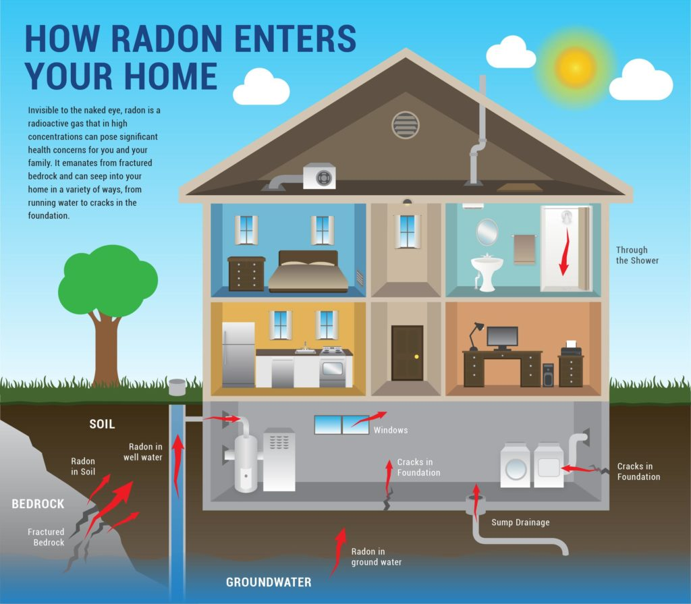

A Bit-WHAT?
There comes a time in every tech nerd's life where something completely unexplainable happens to them all at once. Something that makes you absolutely question the entire merit of technology as we know it.I'd like to call it, the Tech Kruger effect.
The more you know about tech the more confusing it becomes Well, something happened to me that i can only say had an astronomical (heh) chance of occurring.
A Bit Flip.
Bit-Flip?
A bitflip is an often and inconspicuous type of interference that befalls almost every computer. It mostly impacts RAM, but it can impact most (if not all) types of storage. When it impacts RAM its oftentimes minor or inconsequential in nature, largely because of how nonvolatile RAM is in general. However, problems could arrive once it occurs to other forms of storage, particularly embedded NAND flash storage, like the ones found on smartphones. One of the most common signs to tell that a bitflip occurred is the presence of sudden and widespread failure of systems in close proximity of eachother. If a bitflip caused the failure of one device, its likely to impact another in a similar vein. Foreshadowing is a literary device used to give an indication or hint of what is to come later in the story.The series of events
Basically, at around 10:00 PM CST, I was playing Team Fortress 2, wanting to play the New Update, wanting to play Versus Saxton Hale (which was removed from the Casual Map List for a server-crashing bug), I joined a Community server. Round starts, everything is normal. I notice, however, the Saxton Hale model was glitching in a similar manner as if my GPU was bugging out. I made a comment on the community server on how saxton hale was bugging out my GPU. Boom. Team Fortress 2 crashed. Note: because I did not take a screenshot of the game before it crashed, I have to add supplementary images to help demonstrate the visual glitch that occurred to the Saxton Hale 3D model before TF2 crashed. Please note that the effect was far more extreme and spanned the entirety of the map, while the demo from the renderer library Glitch3d is more localized to the limits of the 3D model.
Note: because I did not take a screenshot of the game before it crashed, I have to add supplementary images to help demonstrate the visual glitch that occurred to the Saxton Hale 3D model before TF2 crashed. Please note that the effect was far more extreme and spanned the entirety of the map, while the demo from the renderer library Glitch3d is more localized to the limits of the 3D model."Thats fine.", I foolishly thought. "Must've been a pibby glitch" said the part of my brain half eaten by a rat. "I'll just relaunch TF2. I'll try to join back to the community server-"
{kind=link}
Oh No.
Oh No...
Oh God Please No...
Fuck.
Shit Fuck.
Mother of Fuck.
This has been a headache and I'm exhausted. I tried to play TF2 after all this stress but I was met with indecipherable nonsense dialog boxes and incomprehensible error messages
Update 1, 11:46 AM
Like Jesus on the third day, odd things continue and resume to occur in relation to this developing story, and just like Jesus, it involves rising from the grave. Yes, a full 13 hours after we did everything to revive my beloved phone, it wakes up from its slumber. However, it only happened AFTER I left the house. Come to think of it, there is ANOTHER source outside of a Cosmic Ray that could both explain a few of my system's erratic nature at home.The Radon Theory.
 Any experienced homeowner could (and probably should) tell you about Radon. As a lowley Gen-Z, I have not the priviledge of home ownership. However, I had a really good Science teacher in High School, so if you weren't taught about Radon when you were buying a house, you're being taught it by a tech blog by a queer 19 year old furry.Radon is an odorless, invisible, radioactive gas naturally released from rocks, soil, and water that oftentimes builds up under concrete. It is recommended to check for Radon every two years. Radon is the most common manner where humans contract Radioativity Poisoning. Neglecting your duties to check for Radon Gas could severely impact your health, and (possibly) your tech.
Before we talked about bitflips in vague terms of what causes them, but I feel like I have to explain how Radiation falls into the mix. Radioactivity is the most common manner of bitflips that occur. You can use the analogy of DNA and Binary Data both being easily impacted by radioactive influences, but I feel like thats a bit too on the nose for transhuman dystopian writers to take note of for their next 500GB AAA game.
Radioactivity causes bitflips. Radon, found in most houses, is radioactive.
TL;DR, My phone revived itself immediately upon leaving the house, leading me to believe it wasn't some miraculous act of god that caused this spontaneous failure, but maybe something that impacts millions of households across the world.